2.3 — Inequality Across Countries & Global Inequality
Chapter 2: Inequality
Inequality Across Countries
How does inequality compare across the world? The two graphs below show that inequality levels vary enormously between countries — even among those at similar levels of development.
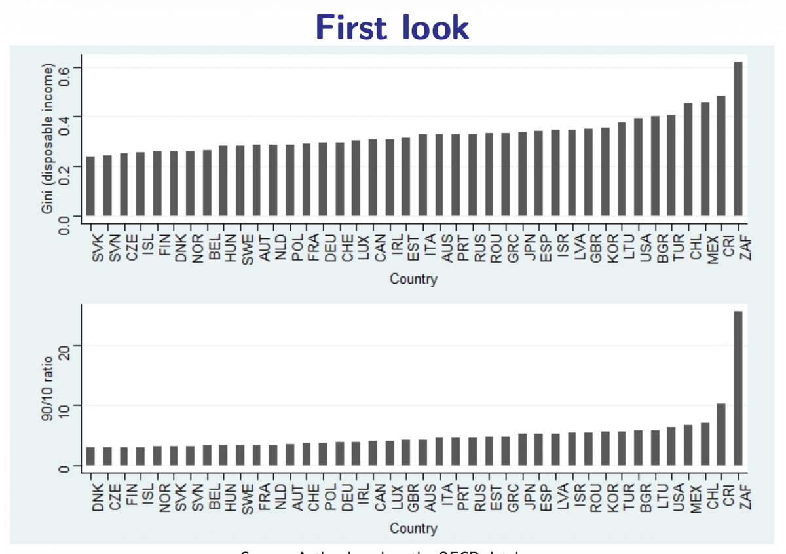
The top panel ranks countries by their Gini coefficient (disposable income). At the low end: Slovenia, Slovakia, Czech Republic, and the Nordic countries — all with Gini values around 0.25–0.28. At the high end: the USA (~0.39), Mexico, Chile, Costa Rica, and South Africa (highest, well above 0.60).
The bottom panel shows the same countries using the 90/10 ratio. The message is consistent: in Nordic countries, a person at the 90th percentile earns about 3 times what someone at the 10th percentile earns. In Latin America and South Africa, this ratio can exceed 10–15×.
Income vs. Wealth Inequality
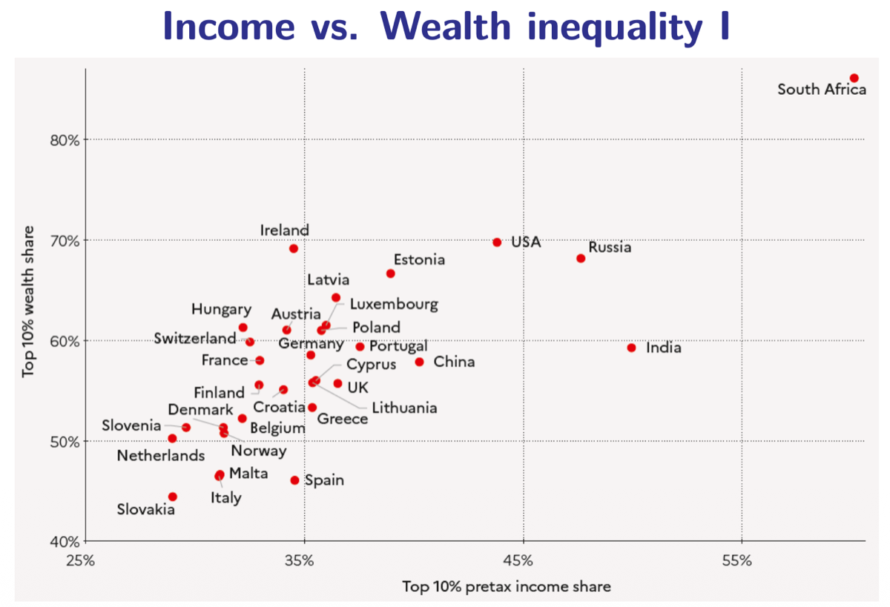
Cross-Country Comparison
This scatter plot places each country by its top 10% income share (X) vs. top 10% wealth share (Y). The striking finding: wealth inequality is always higher than income inequality. In the USA, the top 10% holds about 45% of income but ~70% of wealth. In South Africa, both are extreme.
Why? Because wealth accumulates over time through savings, capital gains, and inheritance — all of which disproportionately benefit those who already have more.
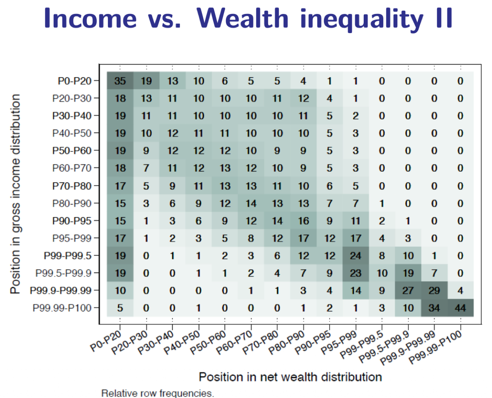
Income-Wealth Heatmap
This heatmap shows how individuals' positions in the income distribution correlate with their positions in the wealth distribution. The strong diagonal concentration means: people wealthy in income tend to be wealthy in assets too.
But the correlation isn't perfect: some individuals have high income but low wealth (young professionals with student debt) and others have high wealth but low income (asset-rich retirees). This is why both dimensions matter for measuring living standards.
Long-Run Inequality Trends
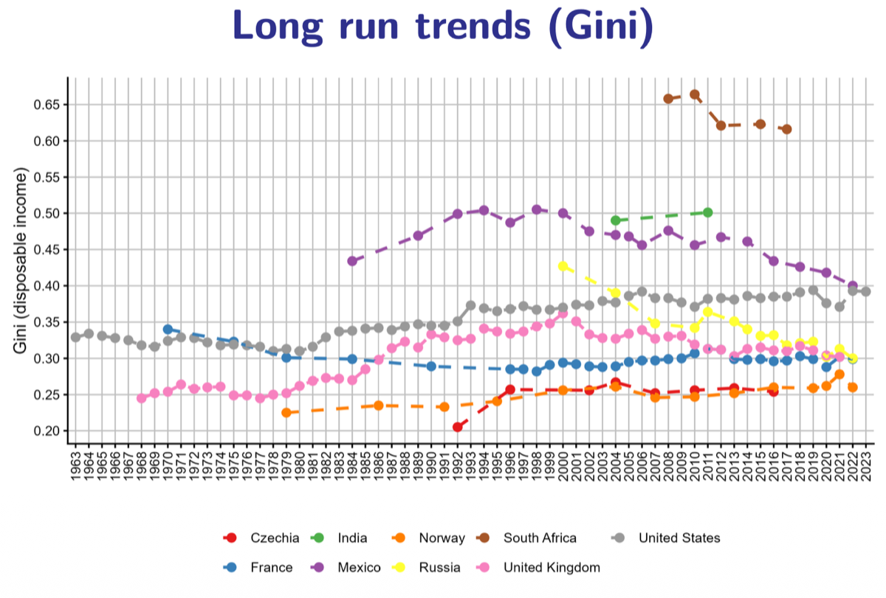
This graph tracks the Gini coefficient in several countries since the 1960s. The trajectories are strikingly different: the USA shows a persistent upward trend in inequality since ~1980; France remains relatively stable and lower; South Africa maintains extremely high inequality throughout.
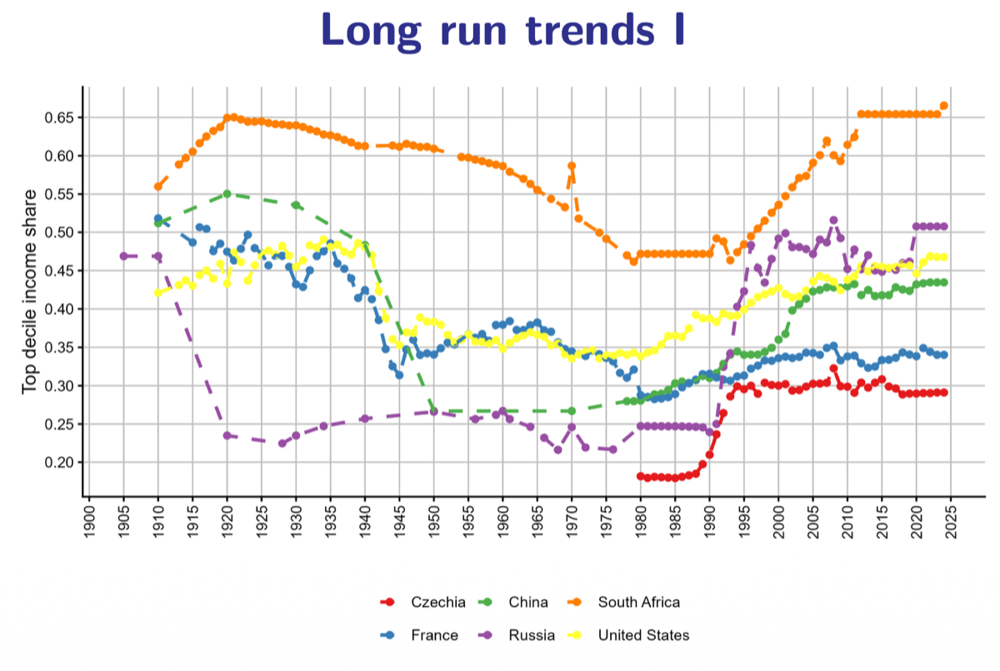
Looking further back — over more than a century — we see the top decile income share (the share of total income going to the richest 10%) across many countries. A common pattern emerges in Western countries: ① high inequality before 1940 → ② dramatic compression after WWII (driven by progressive taxation, destruction of capital, and the welfare state) → ③ resurgence since ~1980.
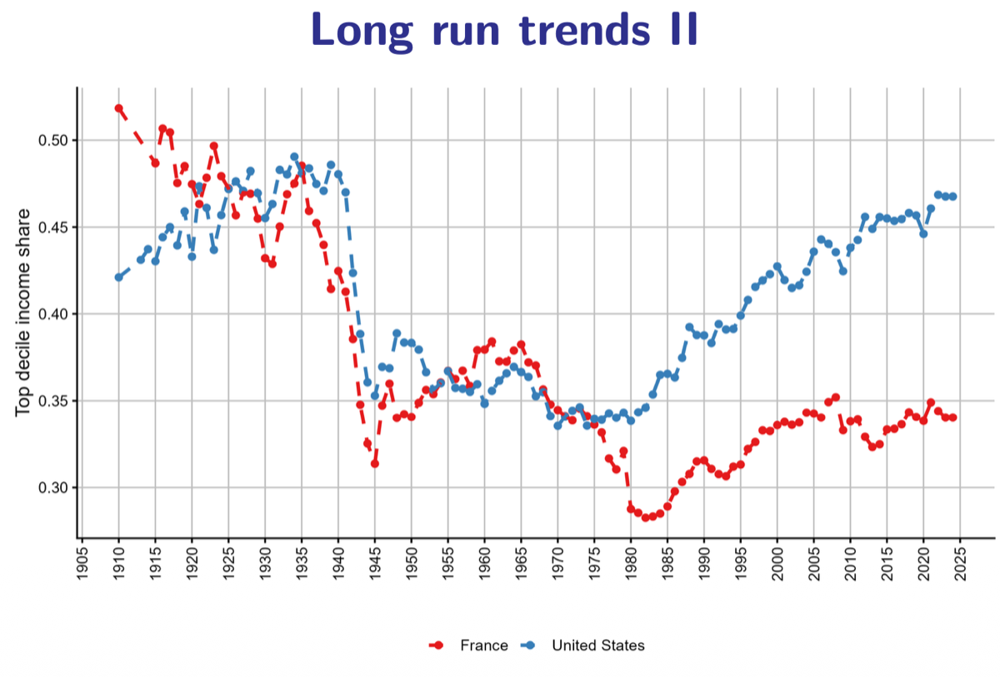
The France vs. USA comparison is especially instructive. Before 1940, both had similarly high inequality. After the war, both experienced dramatic reduction. But since 1980, their paths diverge sharply: US inequality soared back (tax cuts for the rich, deregulation, weakened unions), while France saw only a moderate increase (maintained stronger redistributive policies). This proves that the post-1980 rise was not inevitable — it was shaped by specific policy choices.
The Great Gatsby Curve
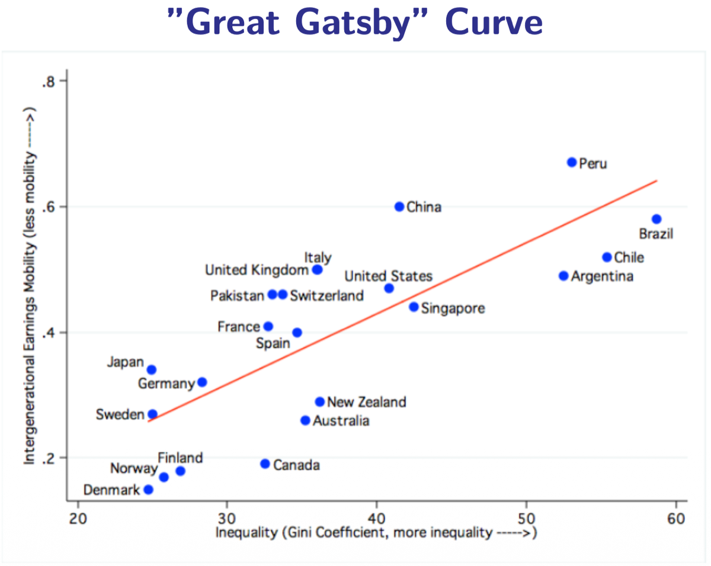
The Great Gatsby Curve is one of the most striking empirical relationships in economics. It plots the Gini coefficient (X-axis) against intergenerational income mobility (Y-axis) for different countries. The result: there is a strong negative relationship — more unequal societies have less social mobility.
🇩🇰 Nordic Countries
Low inequality and high mobility. Your parents' income has a relatively weak influence on your own economic outcomes. The "land of opportunity" is actually Scandinavia.
🇺🇸 United States
Higher inequality and lower mobility. Despite the "American Dream" narrative, the data shows that income rank is highly hereditary. If you're born poor in the US, you're more likely to stay poor than in Denmark or Sweden.
The Great Gatsby Curve is a powerful exam concept. It challenges the common argument that "inequality is fine as long as there's mobility." The data shows that inequality itself undermines mobility — through mechanisms like unequal access to education, healthcare, social networks, and the compounding advantages of inherited wealth.
The Impact of Public Policy: Market vs. Disposable Income
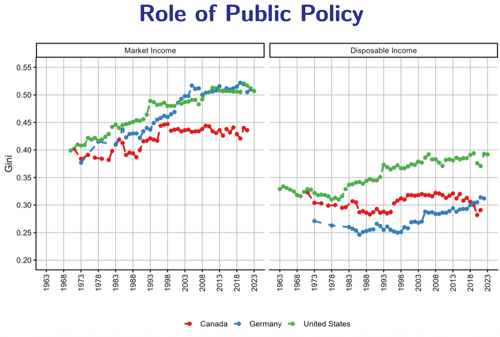
This figure provides the most direct evidence that public policy matters. It compares the Gini coefficient for market income (before any government intervention) to the Gini for disposable income (after taxes and transfers) across countries.
The key findings:
- Market income Gini is high everywhere — even in Germany, Canada, and the USA, pre-redistribution inequality is substantial.
- Germany and Canada achieve large reductions through progressive taxes and generous social transfers.
- The USA achieves a much smaller reduction — its tax system is less progressive and its transfers are less generous.
The gap between market and disposable Gini is the measure of redistributive effort. Large gaps = strong welfare states. Small gaps = limited redistribution.
Main policy tools for redistribution:
- Progressive income tax (higher tax rates for higher incomes)
- Earned income discounts / tax credits for low earners
- Differential treatment of capital vs. labor income
- Inheritance taxes
- Social security systems
- Public education (equalizing opportunities)
Global Inequality
Global inequality can be decomposed into two fundamentally different components:
- Within-country inequality: Differences between individuals inside the same country (e.g., rich vs. poor in France).
- Between-country inequality: The inequality that would exist if everyone within each country had the same income, but countries had different average incomes (e.g., the gap between a Norwegian and a Nigerian average income).
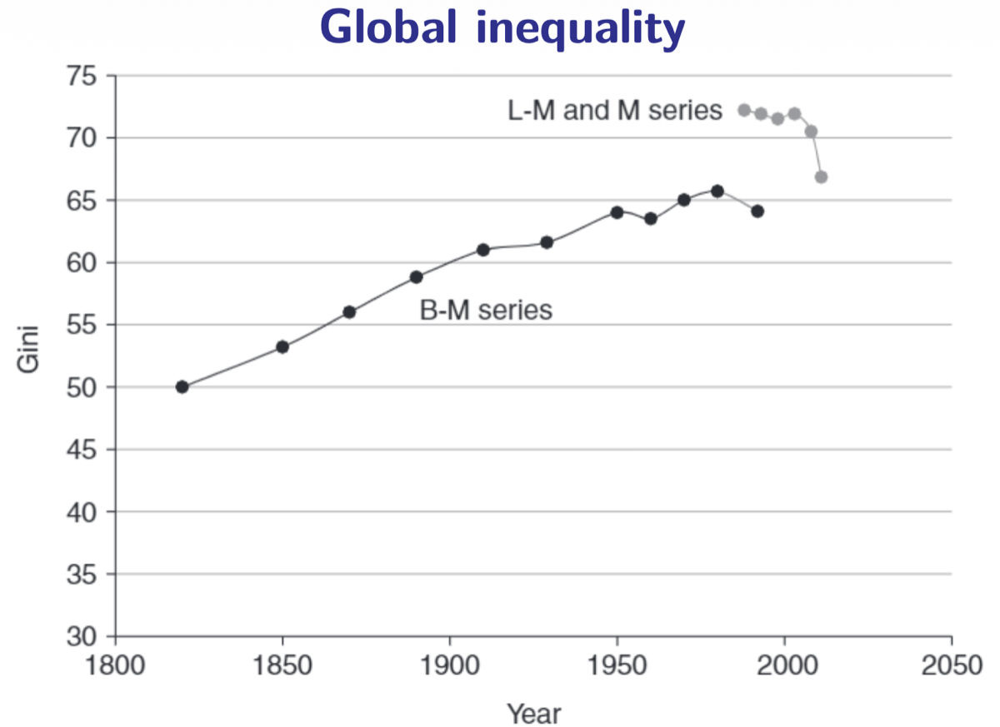
The global Gini coefficient rose dramatically from 1820 to about 1990–2000, as industrialized countries pulled far ahead of the rest of the world. Since then, it has slightly declined, driven mainly by rapid growth in China and India. But global inequality remains extremely high — the world Gini is around 0.65–0.70, significantly higher than the most unequal individual country.
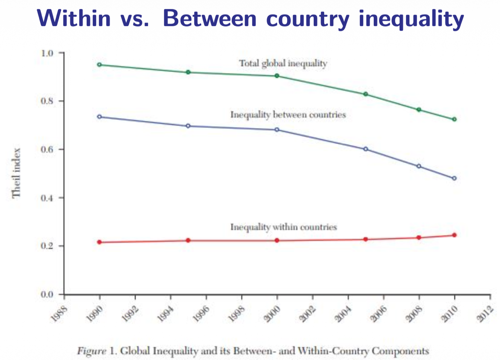
This decomposition using the Theil index reveals a crucial shift: between-country inequality has been declining (thanks to Asian growth), but within-country inequality has been rising. The implication: today, global inequality is increasingly driven by domestic inequality within countries rather than gaps between nations.
The Elephant Curve
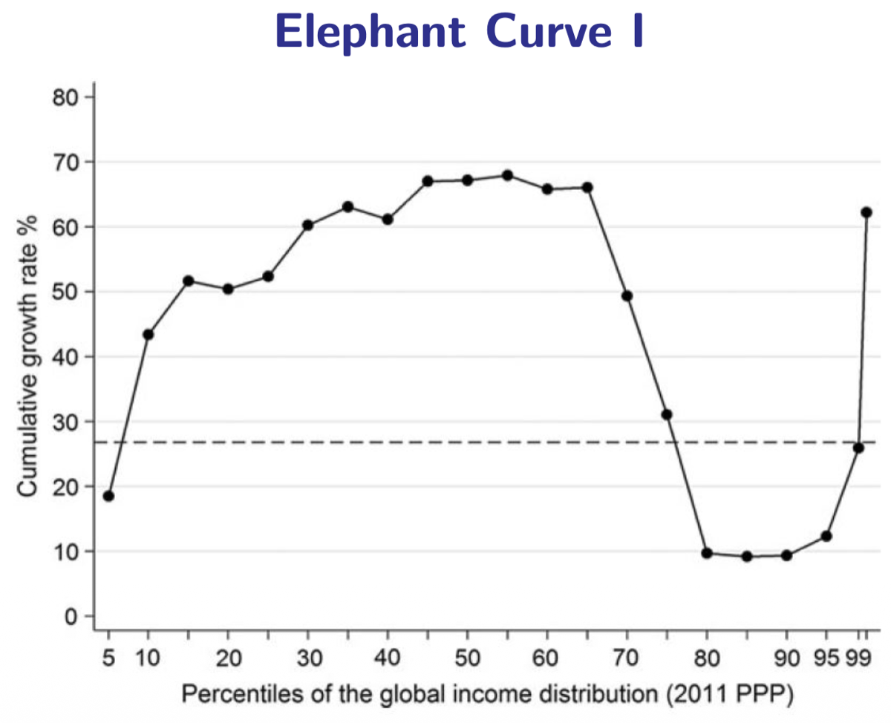
The Elephant Curve (Lakner & Milanovic, 2016) is one of the most famous charts in contemporary economics. It shows the cumulative income growth between 1988 and 2008 for each percentile of the global income distribution. Its shape resembles an elephant — with a back, a dip, and a raised trunk — and it tells the story of globalization's winners and losers:
Global Middle Class (P20–P60)
The biggest winners of globalization: Asian middle classes, especially in China and India, who experienced massive income gains (~60-80% growth). Hundreds of millions of people were lifted out of poverty.
Western Middle Class (P70–P90)
The losers of globalization: working and middle classes in developed countries (US, Europe), who saw near-zero income growth. Their jobs were outsourced, automated, or faced wage competition from low-cost countries.
Global Top 1%
The other big winners: the world's ultra-rich, who captured an enormous share of global income growth through capital gains, financial markets, and the global economy. Their incomes surged.
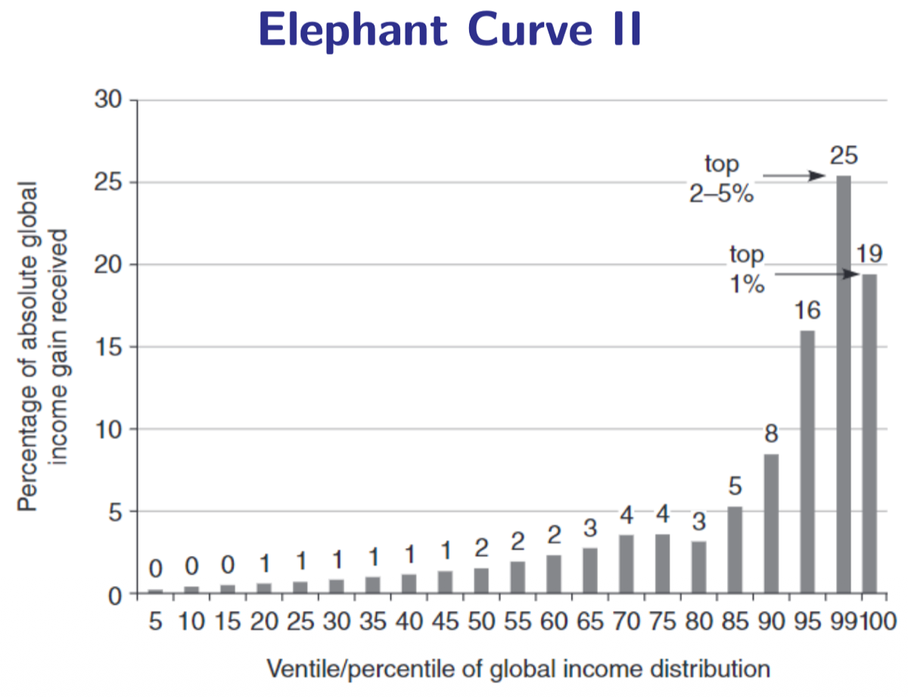
This companion figure makes the point even more dramatically: it shows who captured the global income gains. The top 1% and top 2-5% captured a disproportionately large share of the total growth. Global growth was not distributed evenly — it was captured primarily by the Asian emerging middle class and the global elite.
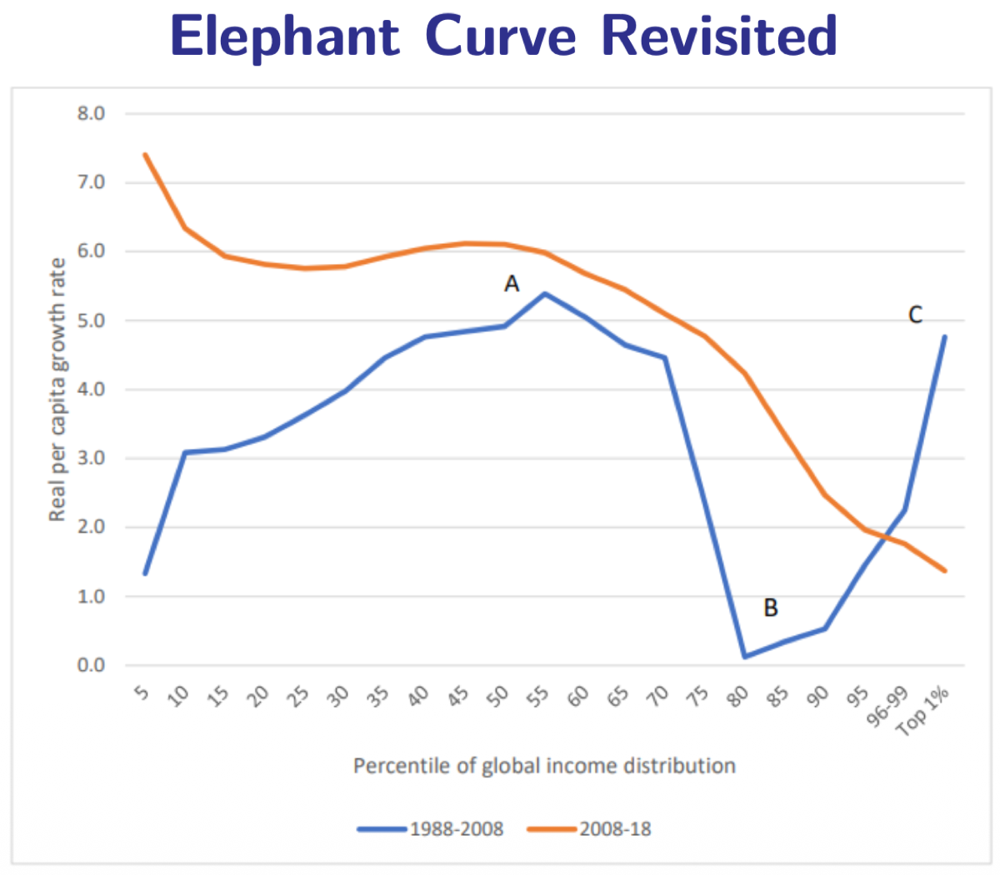
The revisited version compares the pattern across two periods (1988–2008 vs. 2008–2018), revealing that the elephant shape is evolving: growth has become somewhat more diffuse and less concentrated at the very top, with the emergence of a broader global middle class. But the fundamental pattern persists: three zones (A — global middle class growth; B — Western stagnation; C — elite gains).
Key takeaways from Chapter 2:
- We study inequality for instrumental reasons (it causes harm) and intrinsic reasons (it's unjust).
- The Kuznets Curve (inverted-U) is a historical hypothesis, not a law — recent data shows an N-shape.
- Good inequality measures must satisfy axioms: Transfer Principle, Anonymity, Scale Invariance, Decomposability.
- The Gini coefficient (linked to the Lorenz curve) is the most common index, but Atkinson and GE measures have advantages.
- Income can be measured as market, gross, disposable, or extended — each tells a different story about inequality.
- Wealth is far more concentrated than income. The Great Gatsby Curve shows inequality undermines mobility.
- Public policy (taxes + transfers) significantly reduces inequality — but by varying amounts across countries.
- Globally, between-country inequality is falling, but within-country inequality is rising.
- The Elephant Curve reveals globalization's winners (Asian middle class + global elite) and losers (Western middle class).